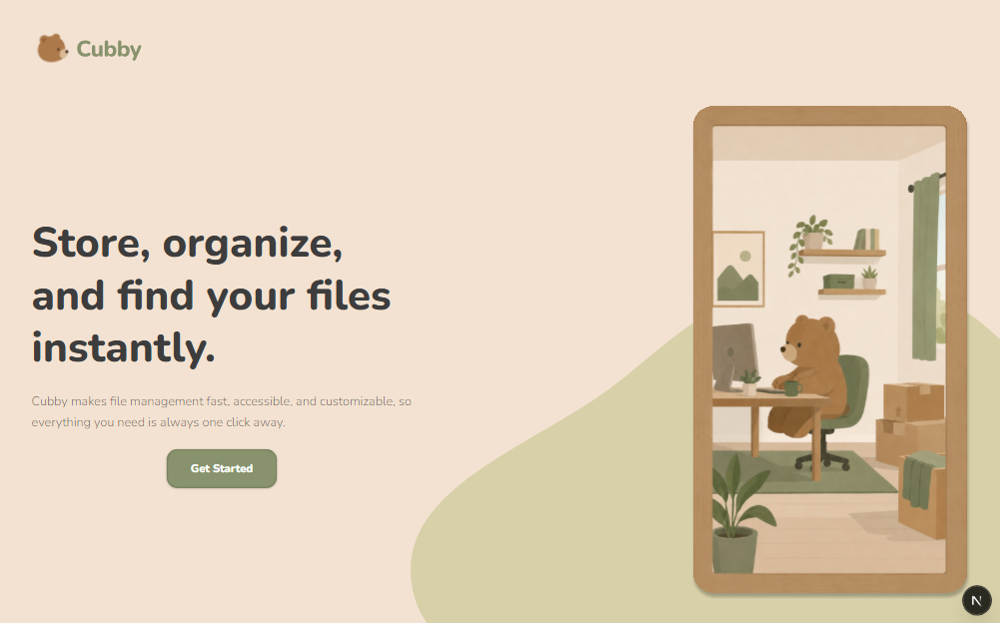
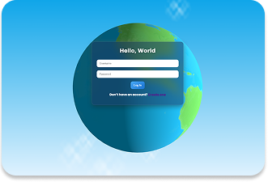
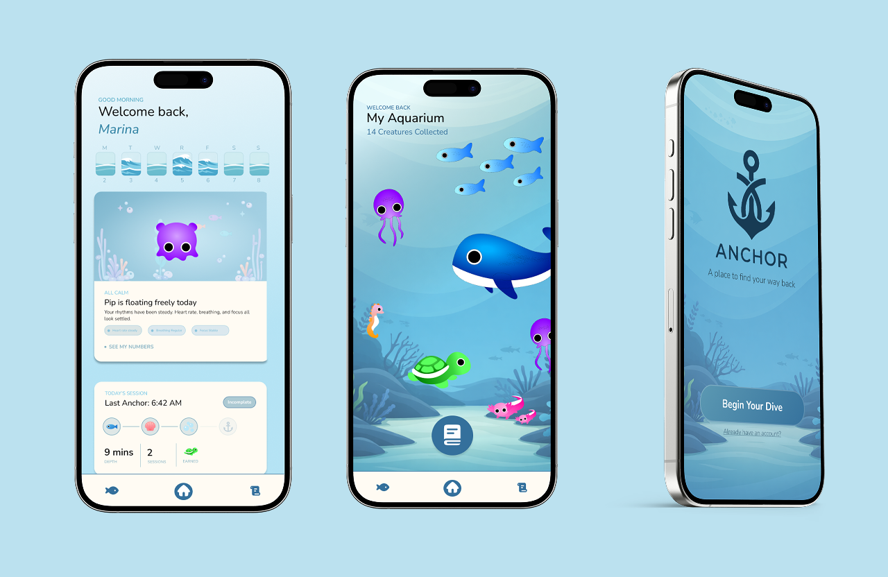
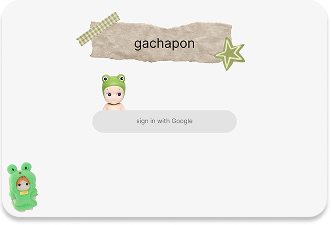
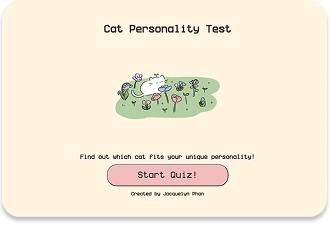
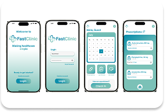
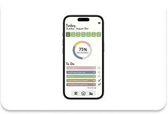
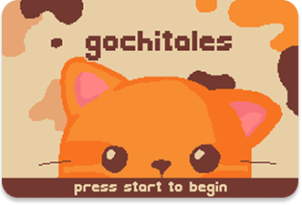

UX/UI Designer & Frontend Developer Computational Media @ Georgia Tech
Computational Media Student @ GT
People & Interaction Design
I’m a fourth-year Computational Media student at Georgia Tech with concentrations in People and Interaction Design.
I’ve always been fascinated by the relationship between humans and technology. I love exploring how we think, how we feel, and how design can make interactions smoother, kinder, and more intuitive.
My passion for UX/UI, frontend development, and human-centered computing comes from wanting to bridge the growing gap between people and the digital tools we rely on.
I’m constantly learning, experimenting, and finding inspiration in the ways people interact with the world.
I’m a Computational Media student at Georgia Tech focused on human-centered design and creating thoughtful and buildable digital experiences.
Bachelor of Science in Computational Media
Concentration in People & Interaction Design
Expected Graduation: May 2027
Frontend Development
UX/UI Design
Programming & Data
Tools
I have native fluency in English and Vietnamese, and can speak beginner-level Japanese.
FEATURED PROJECTS

PERSONAL PRODUCT
Cubby
UX/UI Designer | Frontend Developer
A cozy, customizable storage app exploring how digital organization can feel more personal and approachable.
CareerHub
FULL STACK CASE STUDY
UX/UI Designer | Frontend Lead
A Django-based hiring platform for recruiters and job seekers.

Hello World
TEAM PRODUCT
UX/UI Designer | Frontend Lead
A collaborative travel scrapbooking web app with interactive maps.

UX/UI DESIGN CASE STUDY
Anchor
UX/UI Designer | Product Designer
A calm UX/UI design project focused on clarity, support, and guided user flows.
SELECTED BUILDS & EXPERIMENTS

HACKATHON BUILD
Gachapon
Full Stack Developer
A hackathon project for tracking blind boxes and collectibles.

FRONTEND EXPERIMENT
PersonaCat
Frontend Developer | Interaction Designer
A playful MBTI-style personality quiz built with vanilla web tech.

UX/UI CONCEPT
FastClinic
UX/UI Designer
A mobile healthcare UX project focused on reducing friction.

UX/UI CONCEPT
TaskMe
UX/UI Designer
A task management UX project focused on clarity and prioritization.

TECHNICAL GAME PROJECT
GochiTales
A Game Boy Advance platformer built in C and ARM assembly.
Project Classification
Duration
Project Type
Platform
Role